Lilac
The ground of all four Adulthood panels.

 af KlintThe Ten Largest, No. 7 · 1907All 16
af KlintThe Ten Largest, No. 7 · 1907All 16A studio guide · Stockholm, 1907
Imagine you are Hilma af Klint, forty-five, a trained painter of landscapes and portraits, told by spirits to make ten paintings more than three metres tall in a few weeks. This guide follows how No. 7, one of the four panels of Adulthood, might have been made: from a sheet of paper on the studio floor to the last white words written across it.
No technical study of these paintings has been published: no analysis of the paper or the paint, no X-ray, no account of when the paper was mounted on canvas. What is known comes from your own notes, as museums and biographers report them, and from the painting's surface. The order of the stages is inferred. Each chapter says what its evidence is. The slider steps through six stages; stages 1 to 5 are reconstructions.
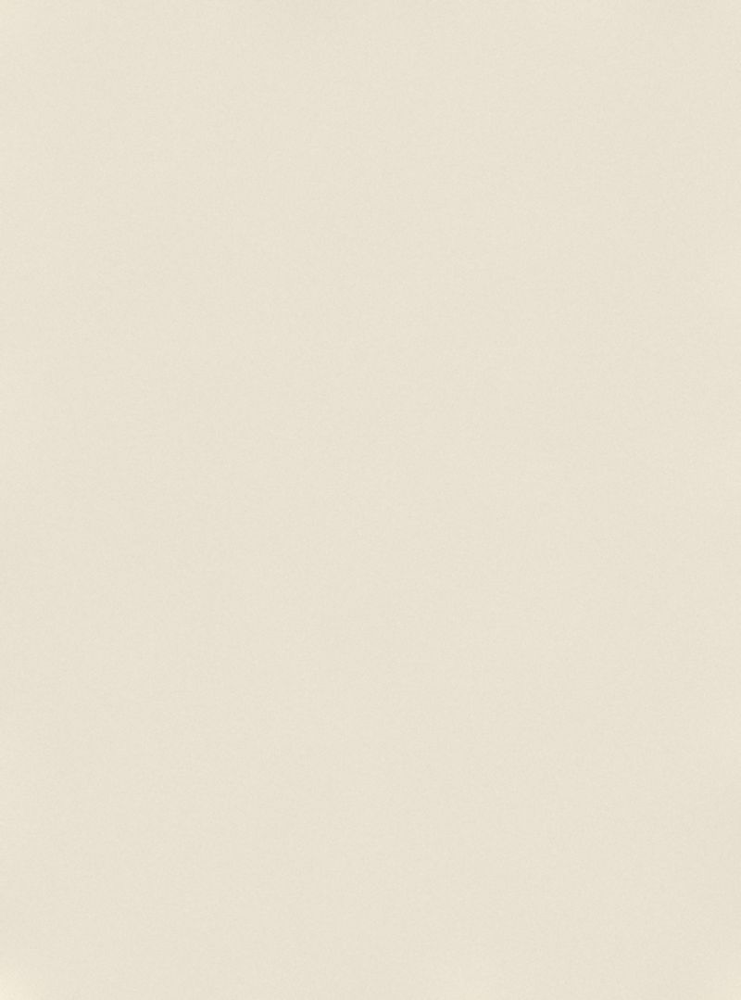
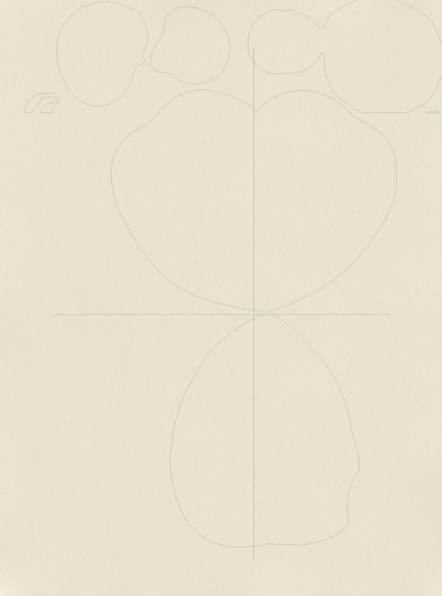
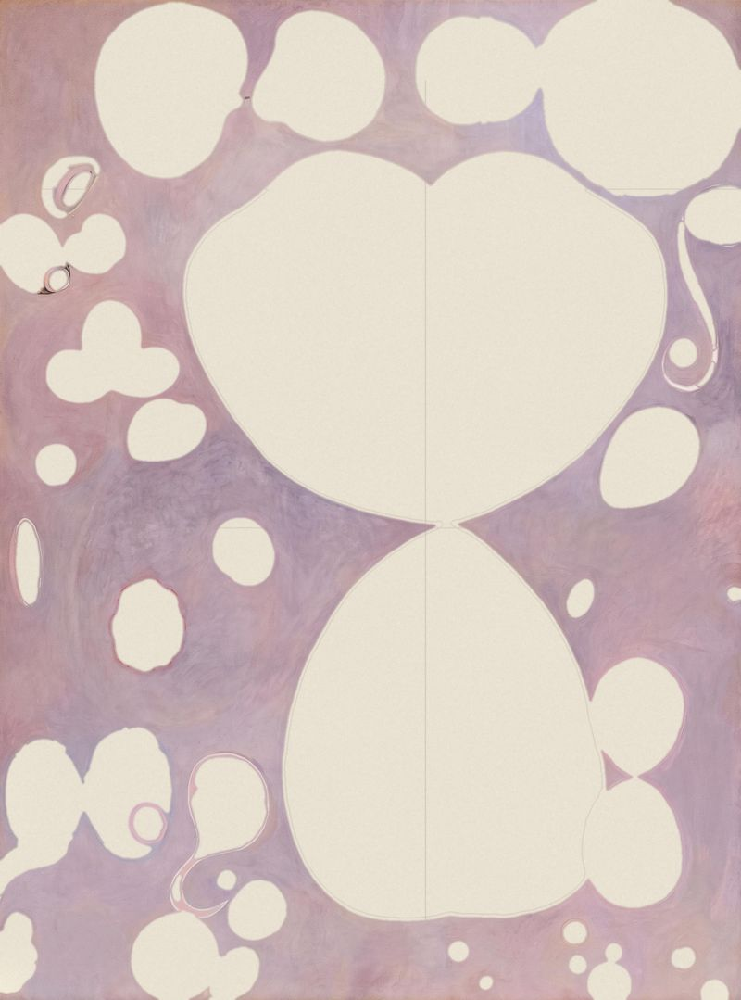
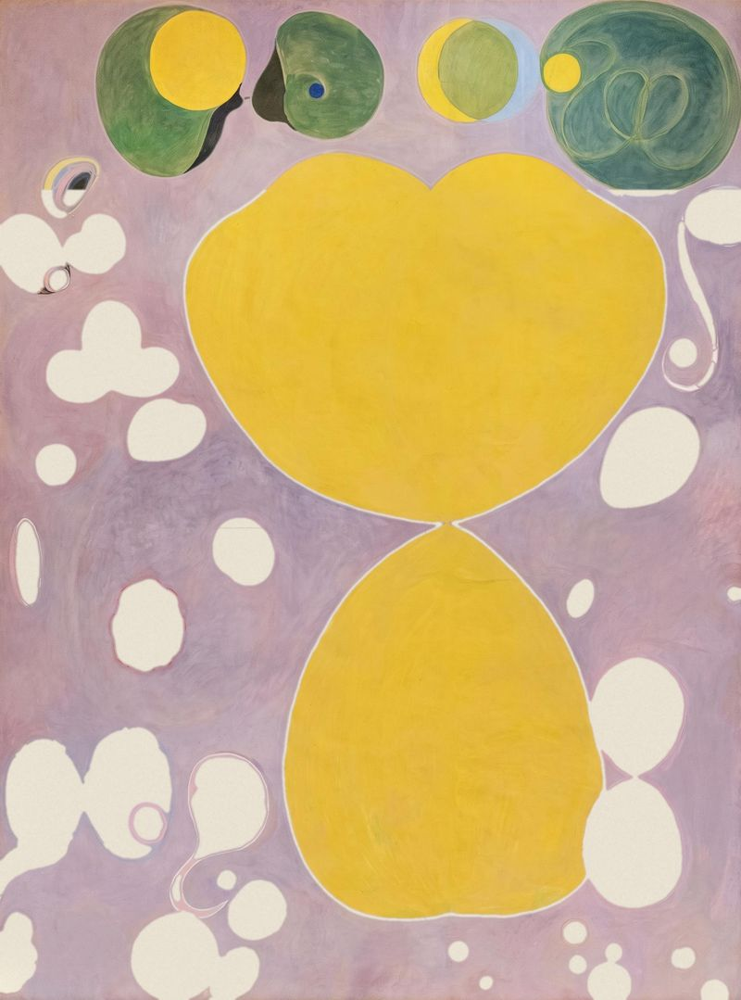
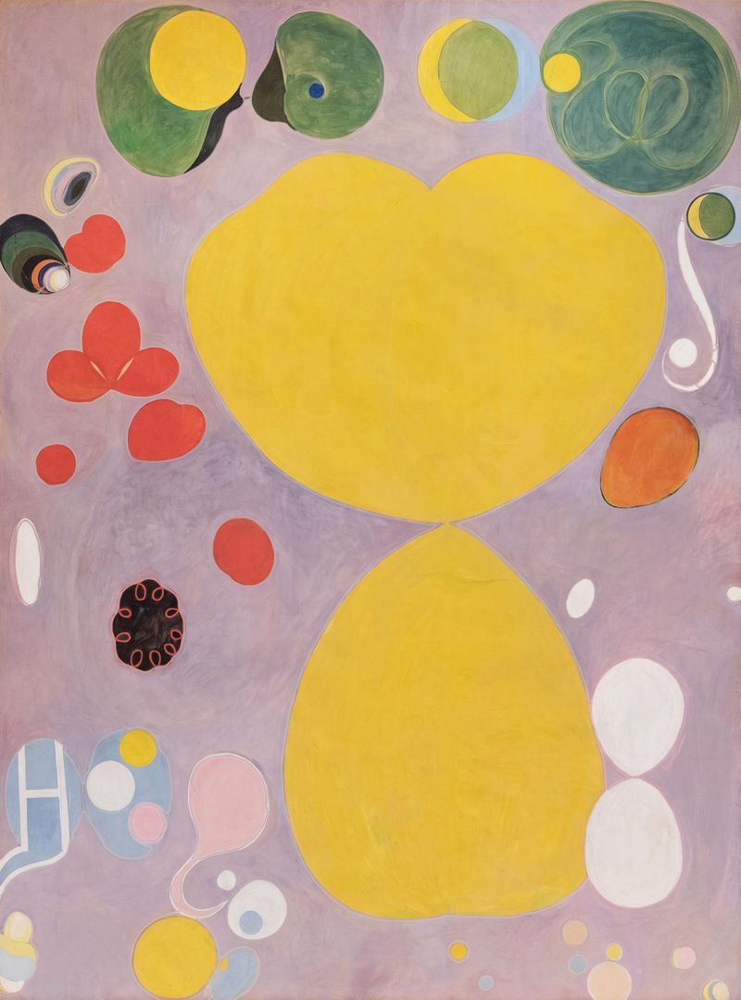
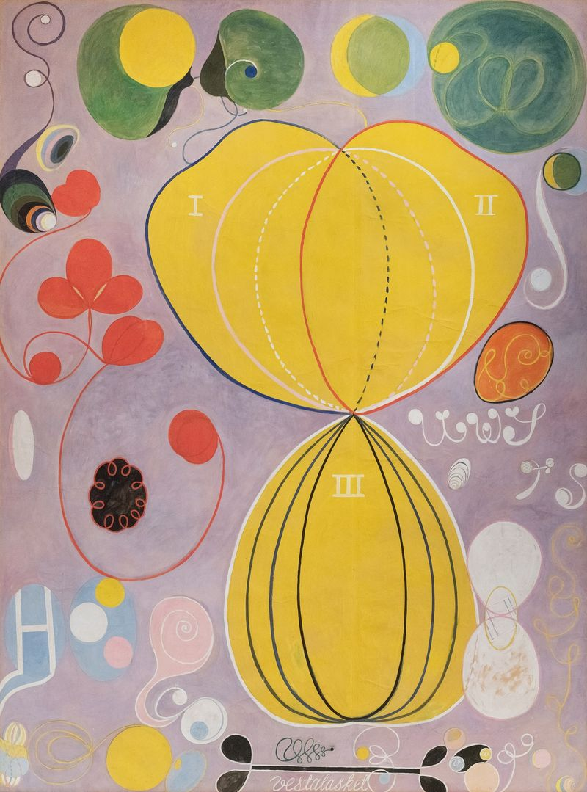
Lines and words
Stage 6 of 6Contours in blue, red and black, dashed lines, white numerals I, II and III, spirals and words such as “vestalasket”. This is the panel today, unsigned.
EvidenceThe Hilma af Klint Foundation's chronology and Moderna Museet's biography for its 2022 exhibition. The séance notes themselves are known here only through these and other secondary accounts.
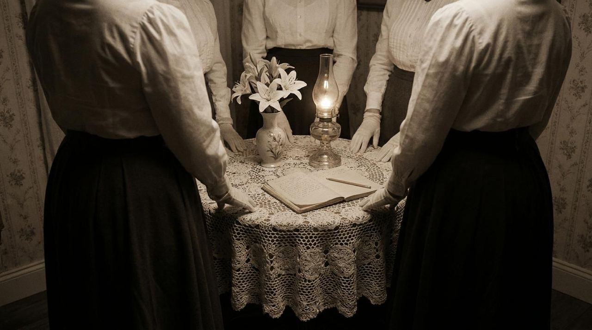
You are Hilma af Klint, born in 1862, a naval officer's daughter. You trained at the Royal Academy of Fine Arts in Stockholm, graduating in 1887, and you make your living from landscapes, portraits and illustration. In the late 1880s the Academy gives you a place in its studio building on Hamngatan, in the centre of the city.
Since 1896 you have met every week with four other women: Anna Cassel, Cornelia Cederberg, Sigrid Hedman and Mathilda Nilsson. You call yourselves The Five. At your séances you receive messages from spirits you call the High Ones, and you write everything down. You also practise drawing automatically, letting the hand move without planning.
In 1904, at a séance, you are told that you will be given a commission: paintings for a temple.
EvidenceYour notes as reported by the Art Gallery of New South Wales (2021), by Moderna Museet, and by Åke Fant (1989) and Per Faxneld (2020), cited in a 2021 thesis; Fant and Faxneld were not read directly. The commission is your own account.
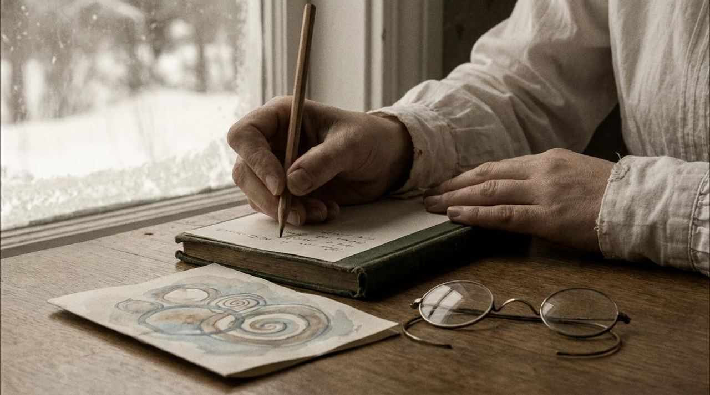
On 1 January 1906 a spirit the group calls Amaliel gives you the task, according to the notes Åke Fant studied. The work is to be mediumistic: you are to be passive. In November you begin The Paintings for the Temple with a series of small canvases called Primordial Chaos. By 1915 the cycle will hold 193 works.
In September 1907 you note a vision: ten “paradisaically beautiful” paintings are to be made. They are to show the four ages of life, childhood, youth, adulthood and old age, and, as you write, to give the world “an insight into the systematising of four divisions of human life”. Each is to take four days. The size is given too: about 3.3 by 2.4 metres.
Later you will describe these paintings as made “directly through me, without any preliminary drawing and with great force”. You say you did not know what they would show.
EvidenceModerna Museet's 2022 biography and the foundation's chronology for the studio. That you worked on the floor is the museums' inference from the size, not a documented fact.
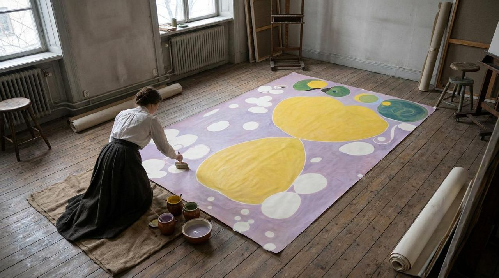
You rent a studio of your own at Hamngatan 9, but these paintings are made in a large shared studio at Hamngatan 5, above Blanch's Café, where the painters Lotten Rönnqvist and Alma Arnell already work. You begin in October 1907.
A sheet more than three metres tall does not fit on an easel. Moderna Museet, the Guggenheim Bilbao and the Art Gallery of New South Wales all think it likely that you painted the panels lying flat on the floor, at least in part. Kneeling or standing over the paper, you can reach the middle only by stepping onto it or leaning in from the edges; how you managed is not recorded.
Paper on the floor has another advantage: thin, quick-drying paint does not run.
EvidenceMuseum captions (tempera on paper, mounted on canvas) and exhibition texts. No analysis of the paper, the binder or the pigments has been published; the colours below are what the photograph shows.
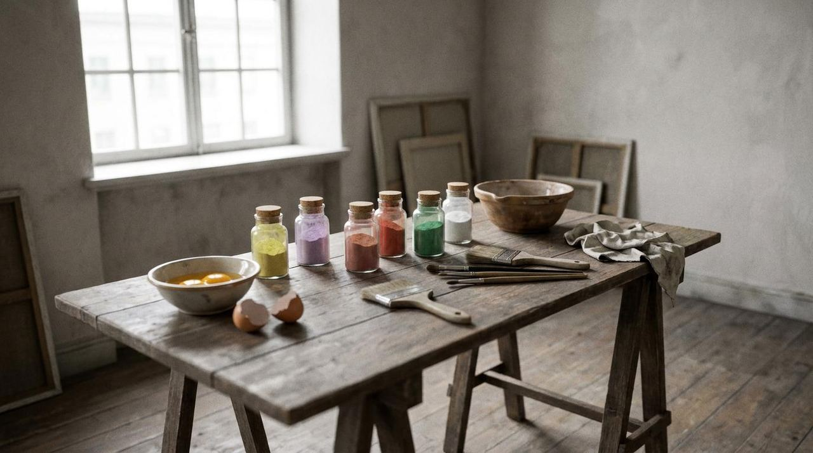
You paint on paper, in tempera, rather than in oil on canvas as in your other large paintings. The Guggenheim Bilbao connects the choice with the Florentine altarpieces you saw in Italy a few years before. Tempera dries fast and lies matte and flat: right for ten huge paintings at four days each.
What kind of tempera is not known. Sources say egg tempera, egg yolk, egg white, or an egg and oil emulsion; none of them cites an analysis.
Each panel was later glued onto canvas. When this was done, and by whom, is not recorded in any source found for this guide. Nor is it known whether each panel is one long sheet or several joined.
The swatches approximate the colours in the photograph. They are not pigment identifications: no sample has been analysed.
The ground of all four Adulthood panels.
Opaque, matte, laid flat over large areas.
Two shades in the discs along the top.
Flowers, stems and one contour.
One egg shape at the right.
Discs, numerals and the written words.
Contours, a bar and leaf shapes at the bottom.
Small discs at the lower left.
EvidenceYour own statement, quoted by Faxneld (2020); what can be seen in the photograph. No infrared study exists to show an underdrawing or its absence.
You said the paintings came without any preliminary drawing. No sketch for The Ten Largest is known, and the notes Fant read describe instructions, not designs.
Yet the large figure is close to symmetrical, and its curves are smooth. In a few places on No. 7 faint grey lines show through the lilac. They may be graphite construction lines; a photograph cannot tell.
The Guggenheim Bilbao says the spirals in No. 1 “seem drawn with a compass”. A string pinned at a centre would draw curves this large. Neither is documented for No. 7.
EvidenceThe panel's surface in a high-resolution photograph. That the lines lie over the colour can be seen; the order of the colour areas is inferred.
Four days for each painting, if you kept to the instructions. The colour lies in flat, opaque areas with soft edges; brushstrokes show in the lilac. The order below is one plausible sequence: ground, large forms, small forms, then the lines and words, which visibly run over the colour.
AI-generatedAfter step 4: lines and words
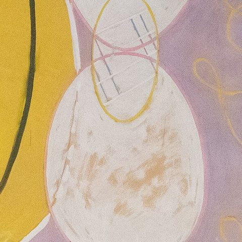
Lay the lilac of Adulthood over the whole sheet, brushing round every form you will need. Tempera dries in minutes, so you can work across a large area quickly and come back over it.
Adulthood has four panels, numbers 5 to 8, all on this lilac. Childhood is blue, Youth orange, Old Age pink and beige.
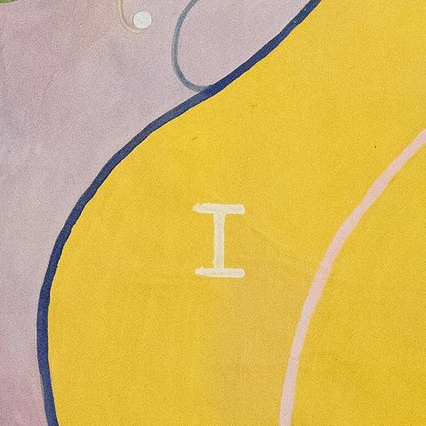
Fill the two yellow lobes and the bell beneath them, which meet at a single point. The figure is close to symmetrical about its axis; how you laid out its curves is not recorded.
Paint the discs along the top: green, yellow and pale blue, some overlapping like phases of the moon.
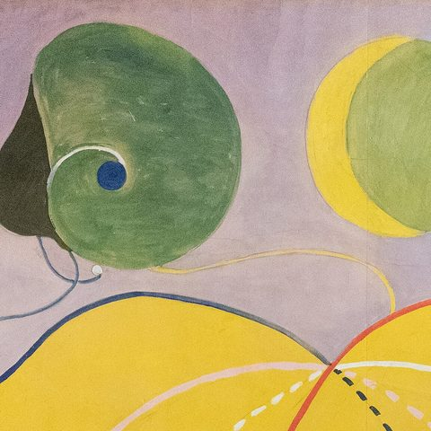
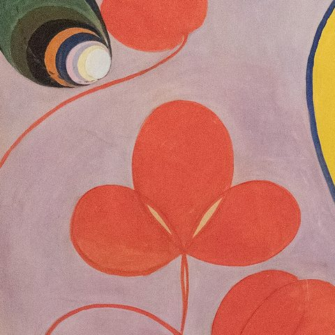
Add the smaller forms: red flowers on the left, a black disc ringed with red loops, white and pink discs at the lower left, an orange egg at the right.
None of these forms is explained in the panel itself. In your notes for the series, a rose and a lily stand for the male and the female, and they grow more abstract from Childhood to Old Age, according to Åke Fant's 1989 study.
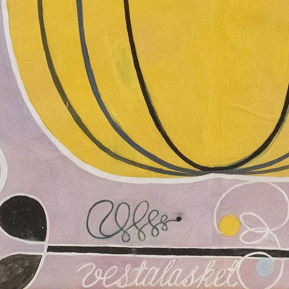
Last, the lines: blue, red and black contours round the lobes, dashed and solid curves inside them, white numerals I, II and III, spirals and stems. The lines run over the colour, so they come after it.
Write words across the ground in white script: “vestalasket” at the bottom, other letters at the right. The Art Gallery of New South Wales calls them words invented by you or received from the spirits. You do not sign.
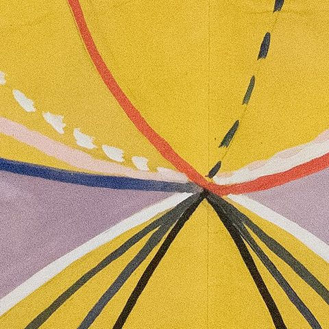
EvidenceThe Guggenheim Bilbao, the Grand Palais (2026) and the Art Gallery of New South Wales name your helpers; none says what they did. The dates come from Moderna Museet and from Fant, as cited.
You do not work alone. Two people from your circle help: Cornelia Cederberg, one of The Five, and Gusten Andersson. Following the spirits' instructions you ask Cederberg to help, the Art Gallery of New South Wales says, “though under af Klint's direction”. What either of them did, grinding colour, moving the paper, laying in the ground, is not recorded. Of Gusten Andersson almost nothing is known from the sources read for this guide.
The pace is extraordinary. The instructions allow four days a painting, and you finish all ten by December. Moderna Museet speaks of forty days for the ten, which matches four days each; other accounts say about two months, the time from the October start to the December finish.
Then you stop. The Five break up early in 1908, and in March you hear Rudolf Steiner lecture in Stockholm. In 1908 your mother goes blind, and you give up the studio.
EvidenceSearches of museum, foundation and conservation sources in English and Swedish, October 2026. A study may exist that was not found; the seven-volume catalogue raisonné (2020–22) was not consulted.
For most guides in this series a museum has X-rayed the painting, sampled its layers and published what it found. For The Ten Largest, nothing of the kind has been published. The panels stayed in your studio and then with your family and the foundation; they became widely known only after Moderna Museet's exhibition in 2013 and the Guggenheim's in 2018.